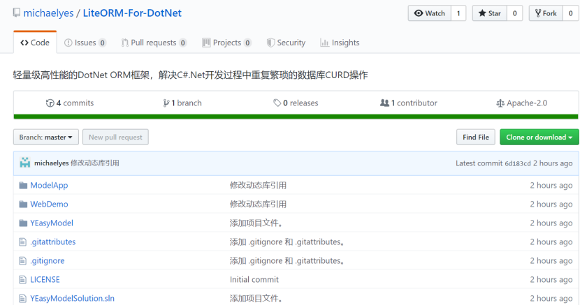
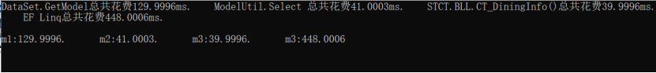
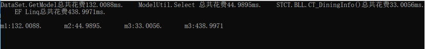
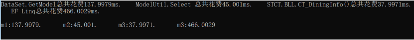
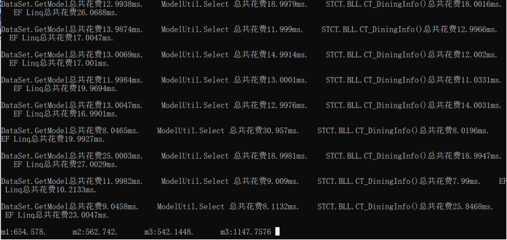
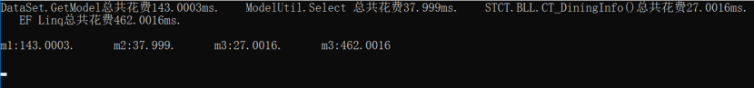
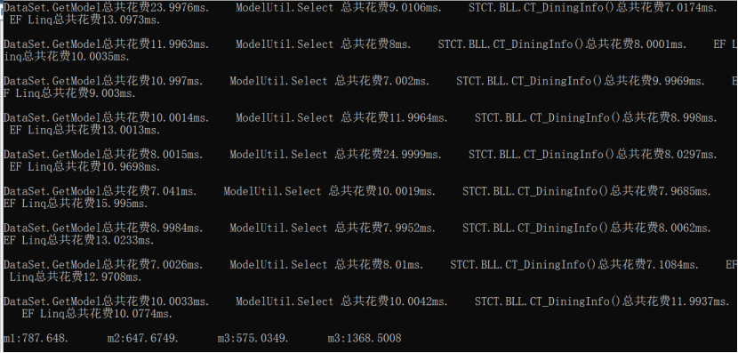

这是一个DotNet轻量级ORM框架，解决C#.Net开发过程中重复繁琐的数据库CURD操作。
前言
因工作中接手的.net项目，源码里面都用了动软代码生成的源码做为数据库操作类库。其中，有些根本就没有用到，今后也不会用到的冗余代码——垃圾代码。而每次如果有表结构修改，就得重新生成表实体/手动修改实体类，然后再修改代码中实体类逻辑，再修改DAL（数据库访问层）的赋值代码、sql字段、数据类型。
于是，产生一个想法，借鉴EF的理念，利用反射技术，用表实体去操作数据库，做增、改、删、查处理。并且，将表实体类更精细化标注，增加了字段名、主键、自增长、注释【标题】、数据类型、长度的属性标识，更有利于实体生成更优的sql脚本。
由此，通过反射技术把所有表CUDR操作的统一处理，以前修改了表结构，就得更新表实体类、修改逻辑代码、修改DAL。现在，只需求更新表实体及对应的逻辑代码就可以，不用再去维护DAL代码，干掉那些每个DAL层中70%的代码，达到精简代码，提高开发效率的目的。
有了这个想法，便开始了冗长的撸代码，断断继继历经两个月的时间，终于完成了构想的雏形。然后，又花点时间去了解一下怎么玩github，把源码库传到上面去。放出来，让有需要的人拿去用，希望各位看官多多指教、发表意见，大家一起改进，完善。
下面奉上我的github地址，走过路过的都进来看看，给个Star就更好不过了。
详情介绍
项目开源库结构图

1、YEasyModel
主要实体类反射类库，定义实体类字段的数据类型、长度、主键等特性；定义CURD方法，查询参数表达式、排序表达式。利用lambda定义查询逻辑，生成sql过滤条件；查询/更新字段定义，通过反射生成对应的Sql参数；排序逻辑定义，生成字段排序规则；DataTable与实体类转换方法。
2、ModelApp
winform程序，用于配置连接数据库，定义命名空间、实体类名，生成指定的表/视图的实体模型；
3、WebDemo
Webapi范例，简单的表实体模型使用说明；
（暂时先写这些，后面有时间再完善）
性能
以下四种不同方式查询数据库记录并转为实体类的测试：
m1，DataSet实体表查询记录；
m2，YEasyModel实体类工具查询记录；
m3，三层工厂模式查询记录，实例化一次，后面从缓存取得实例；
m4，Entity Framework查询记录；
查询消耗的时间单位是毫秒。
第一次查询1条记录

第二次查询1条记录

第三次查询1条记录

第四次连续执行50次的查询1条记录

执行1次查询8条记录

连续执行50次的查询8条记录

根据以上多种测试结果对比得出：
m1 —— DataSet排第三；
m2 —— YEasyModel其次；
m3 —— 三层工厂模式最快，因为有实例化缓存，第二次开始便不用再创建实例对象， 单条数据查询时，速度优势明显。但需要维护的逻辑代码多；
m4 —— EF最慢，且劣势明显；太慢了！
测试代码：
using System;
using System.Collections.Generic;
using System.Linq;
using YEasyModel;
namespace WebApplication1.Tests
{
static class Program
{
/// <summary>
/// 应用程序的主入口点。
/// </summary>
[STAThread]
static void Main()
{
double m1 = 0;
double m2 = 0;
double m3 = 0;
double m4 = 0;
var c = new DBContext();
var bll = new STCT.BLL.CT_DiningInfo();
var aa = new DataSet1TableAdapters.CT_DiningInfoTableAdapter();
for (int i = 0; i < 50; i++)
{
DateTime beforDT = System.DateTime.Now;
DataSet1.CT_DiningInfoDataTable d = aa.GetData();
DateTime afterDT = System.DateTime.Now;
TimeSpan ts = afterDT.Subtract(beforDT);
var msg = string.Format("DataSet.GetModel总共花费{0}ms. ", ts.TotalMilliseconds);
m1 = m1 + ts.TotalMilliseconds;
beforDT = System.DateTime.Now;
List<CT_DiningInfo> mmm = ModelDAL.Select<CT_DiningInfo>();
afterDT = System.DateTime.Now;
ts = afterDT.Subtract(beforDT);
msg += string.Format("ModelUtil.Select 总共花费{0}ms. ", ts.TotalMilliseconds);
m2 = m2 + ts.TotalMilliseconds;
beforDT = System.DateTime.Now;
var list = bll.GetModelList("");
afterDT = System.DateTime.Now;
ts = afterDT.Subtract(beforDT);
msg += string.Format("STCT.BLL.CT_DiningInfo()总共花费{0}ms. ", ts.TotalMilliseconds);
m3 = m3 + ts.TotalMilliseconds;
//beforDT = System.DateTime.Now;
//var ssss = (from a in c.DBCT_DiningInfo select a).ToList();
////var ll = c.DBCT_DiningInfo.AsNoTracking().ToList();
//afterDT = System.DateTime.Now;
//ts = afterDT.Subtract(beforDT);
//msg += string.Format("EF Linq 总共花费{0}ms. ", ts.TotalMilliseconds);
beforDT = System.DateTime.Now;
//var ssss = (from a in c.DBCT_DiningInfo select a).ToList();
var ll = c.DBCT_DiningInfo.AsNoTracking().ToList();
afterDT = System.DateTime.Now;
ts = afterDT.Subtract(beforDT);
msg += string.Format("EF总共花费{0}ms. ", ts.TotalMilliseconds);
m4 = m4 + ts.TotalMilliseconds;
Console.WriteLine(msg);
Console.WriteLine();
}
Console.WriteLine(string.Format("m1:{0}. m2:{1}. m3:{2}. m4:{3}", m1, m2, m3, m4));
Console.WriteLine();
Console.Read();
}
}
}
总结
（有空再写）
最后，奉上github地址：https://github.com/michaelyes/LiteORM-For-DotNet。